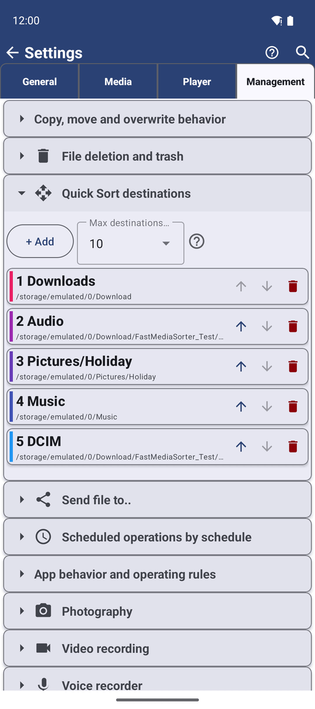
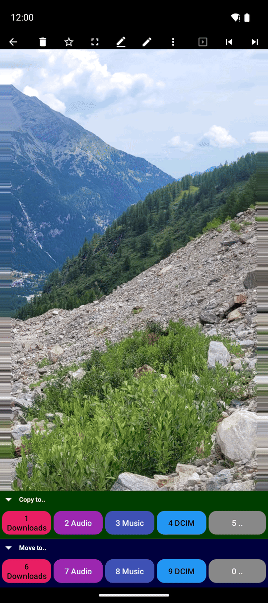

Сортуйте файли по призначеннях швидким сортуванням
Перетворіть свої папки на пронумеровані кольорові призначення, а потім копіюйте чи переміщуйте фото або відео, на яке дивитеся, в одне з них одним дотиком чи цифровою клавішею.
Чому вам це сподобається
Три тисячі літніх фото, усі в одній папці камери. Ви хочете гарні в «Найкраще з 2026», сімейні в «Для бабусі», чеки в «Податки», а решту лишити на місці. Перетягувати файли один за одним у файловому менеджері зайняло б тиждень.
Швидке сортування перетворює це на ритм: погляньте на фото, торкніться кнопки папки, якій воно належить, і наступне фото вже на екрані. Кожна папка, у яку ви сортуєте, - це призначення: ресурс із власним номером і кольором.
- ✓ FastMediaSorter будь-якої редакції. Мережеві призначення потрібні будь-якій редакції, крім Lite; хмарні призначення - будь-якій, крім Lite і FOSS.
- ✓ Папки, у які ви хочете сортувати, додані як ресурси, у які застосунок може писати - див. Додавання папок з цього пристрою. Ресурси лише для читання не можуть бути призначеннями.
Знайомтеся з першим призначенням - Завантаження
Під час першого запуску застосунок уже робить папку телефону Завантаження призначенням номер один, тож швидке сортування працює одразу: завжди є хоча б одне місце, куди відправити файл.
Перетворіть папку на призначення
Є три способи, скористайтеся тим, що ближче:
- Під час додавання папки позначте Додати до швидкого сортування (для мережевої папки чи SFTP-сервера: Швидке сортування).
- На головному екрані чи в браузері файлів відкрийте меню з трьома крапками ресурсу й торкніться До швидкого сортування.
- Відкрийте Налаштування, вкладку Управління, блок Призначення швидкого сортування, і торкніться + Додати. Список пропонує кожен ресурс, у який ви можете писати, що ще не є призначенням.
Кожне нове призначення отримує наступний вільний номер і власний колір із набору з десяти.
Упорядкуйте, перефарбуйте й обмежте свої призначення
У Налаштуваннях, Управлінні, Призначеннях швидкого сортування ви бачите всі призначення в їхньому порядку. Для кожного:
- Торкніться кольорового квадратика, щоб обрати інший колір - зручно, коли «Видалити пізніше» має бути червоним, а «Залишити» - зеленим.
- Скористайтеся стрілками вгору і вниз, щоб змінити його місце, а тим самим і номер.
- Торкніться кнопки видалення, щоб прибрати його зі списку («Видалення призначення»). Папка і її файли лишаються на місці; вона лише перестає бути призначенням.
Макс. призначень (1-30) вирішує, скільки призначень у вас може бути; за замовчуванням це 10.

Сортуйте, поки дивитеся на файли
Відкрийте папку, повну невідсортованих фото, і торкніться першого. У плеєрі панель команд показує два ряди кольорових кнопок, по одній на кожне призначення:
- Копіювати до.. - кладе копію в те призначення і лишає оригінал на місці.
- Перемістити до.. - переміщує файл туди; він покидає поточну папку.
Торкніться кнопки призначення, і файл одразу туди йде - без додаткових запитань. З увімкненим Переходити до наступного після копіювання (увімкнено за замовчуванням) наступне фото з'являється одразу, тож ви можете тримати рівний темп: подивитись, торкнутись, подивитись, торкнутись. Після переміщення наступний файл з'являється сам собою, бо переміщений покинув папку. Папка, з якої ви сортуєте, ніколи не показує власної кнопки.
Перенесення виконується у фоні, тож навіть велике відео на домашній комп'ютер вас не затримає.

Підженіть панель під свій екран
- Торкніться заголовка Копіювати до.. чи Перемістити до.., щоб згорнути цей ряд, коли ви лише копіюєте чи лише переміщуєте. Коли обидва згорнуті, вони стоять поруч в одному рядку.
- Кнопки самі ділять ширину екрана: кілька призначень отримують широкі кнопки, багато призначень отримують більше рядів дрібніших, а текст зменшується, щоб кожне ім'я лишалося читабельним - на телефоні, планшеті чи ТВ.
- Кожна кнопка зберігає колір свого призначення, з темним чи світлим текстом, обраним так, щоб ім'я завжди було легко прочитати.
Надішліть файл у папку, що не є призначенням
Наприкінці кожного ряду є кнопка ... Вона відкриває вікно вибору папки Android: оберіть будь-яку папку, і файл скопіюється чи переміститься туди лише один раз, без додавання папки до ваших призначень.
Сортуйте цифровими клавішами з клавіатури чи пульта ТВ
З клавіатурою, пультом ТВ чи геймпадом кожна видима кнопка отримує невеликий значок з номером. Клавіші від 1 до 9 і 0 (для десятої) активують кнопки по порядку - спершу всі кнопки Копіювати до.., потім кнопки Перемістити до... Згорніть ряд копіювання, і номери перейдуть на кнопки переміщення. Значки клавіш показують ті клавіші, які ви справді призначили, якщо ви змінили їх у налаштуваннях клавіатури (див. Керування клавіатурою, D-pad і Android TV).
Однакові імена, і зміна рішення
- Коли призначення вже має файл з таким самим іменем, файл за замовчуванням пропускається, і нічого в призначенні не замінюється. Увімкніть Перезаписувати при копіюванні чи Перезаписувати при переміщенні в Налаштуваннях, Управлінні, Копіювання, переміщення й перезапис, якщо новий файл має замінити старий.
- Торкнулися не тієї кнопки? Коротке повідомлення зі Скасувати з'являється внизу справа одразу після копіювання чи переміщення. Торкніться його, щоб скасувати останній крок.
Що ви отримаєте
Три тисячі літніх фото відсортовано за один вечір: найкращі в «Найкраще з 2026», сімейні в «Для бабусі», чеки в «Податки» - кожне одним дотиком, у кольорах, які ви обрали, а папка камери нарешті охайна.
Поради та усунення несправностей
- Кольори - це підказка для пам'яті. Дайте однаковий колір призначенням, що належать разом, і сортування стане рефлексом.
- Спершу копіюйте, переміщуйте пізніше. Коли сортуєте для когось іншого, копіюйте - ваша власна папка лишається повною.
- Зони дотику замість кнопок. Ви також можете дозволити дотикам до частин екрана копіювати чи переміщувати - див. Сенсорні зони у Керування відтворенням відео.
- Багато файлів одразу зручніше копіювати з браузера файлів - див. Копіювання, переміщення і видалення файлів.